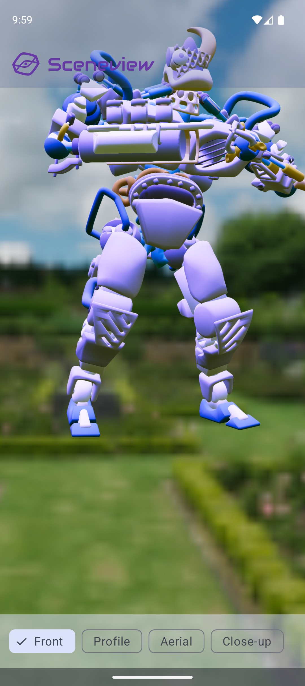
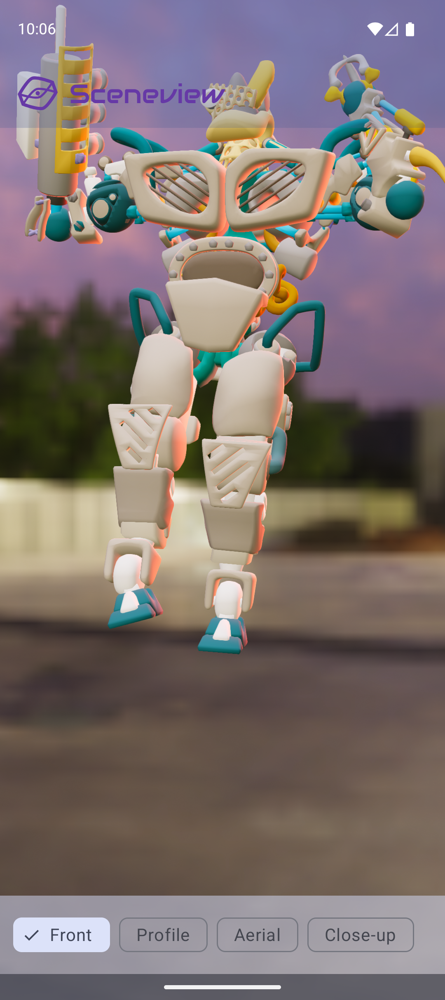
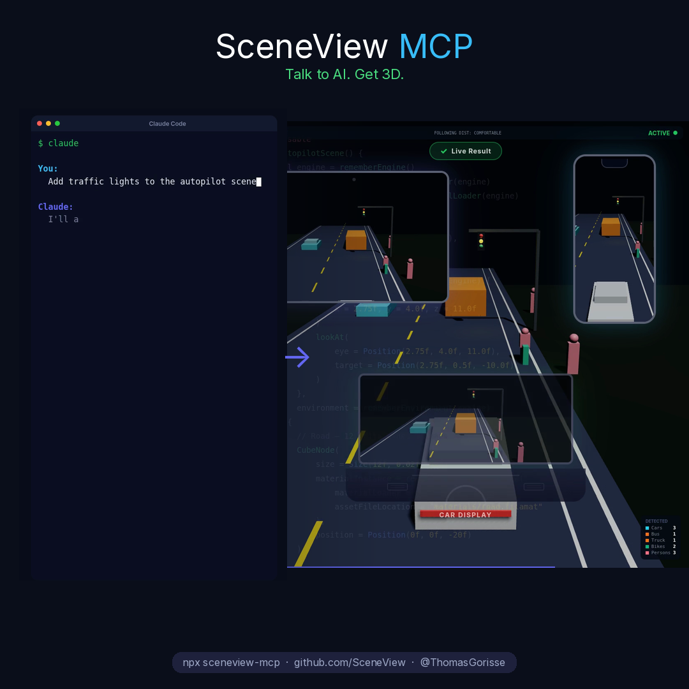
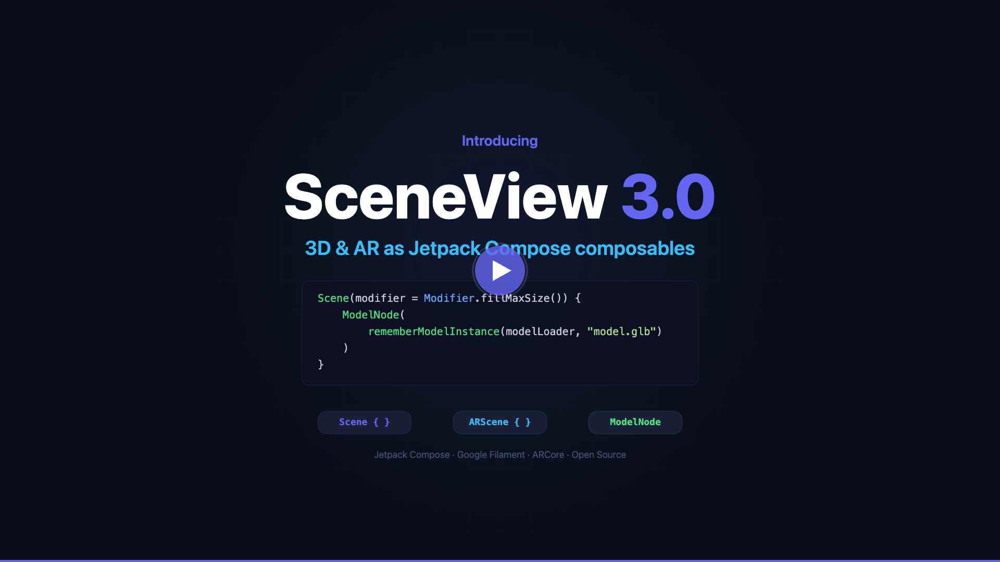

17 March 2026
Confidential · InternalAuthor: Thomas Gorisse
R&D Report — AI-Assisted SDK Development
A 3-day experiment using Claude Code as the primary contributor across the full SceneView SDK lifecycle:
architecture, code, tests, documentation, CI/CD, and marketing launch.
This report summarises what was built, what worked, what didn't, and what it means for our repos.
Context
Why SceneView — and why it was the right test bed
SceneView is my personal open-source Android 3D/AR library, built on Google Filament and ARCore.
It has thousands of users on Maven Central but carries zero commercial risk to the company.
That made it the ideal environment to run a real experiment before applying any learnings to our B2B SDK work.
The task was non-trivial: a complete rewrite of the SDK from a legacy View-based API
(imperative, lifecycle-heavy, boilerplate-laden) to pure Jetpack Compose composables —
the same complexity class as major work we'd undertake on our own repos.
The tool used throughout: Claude Code (Anthropic's terminal-based coding agent).
8 working sample appsmodel-viewer, ar-model-viewer, gltf-camera, camera-manipulator, ar-augmented-image, ar-cloud-anchor, ar-point-cloud, autopilot-demo — all rewritten as Compose ActivitiesSamples
MCP server — @sceneview/mcpPublished npm package. Exposes full API docs, live GitHub issues, code validator, and working samples as MCP tool calls. Any AI assistant integrates the SDK in seconds.AI tooling
Full documentation siteMkDocs Material site, Dokka KDoc for both modules, CHANGELOG.md, MIGRATION.md, 2 codelabs (3D + AR), README for every sampleDocs
CI/CD from scratchGitHub Actions workflows for build, test, publish to Maven Central, Dokka to GitHub Pages — fully automated, zero manual YAML writtenInfrastructure
Marketing launch contentLinkedIn launch video + post (3 caption variants), Medium article (paste-ready), YouTube script + storyboard, MkDocs codelabs published to GitHub PagesMarketing
Sample commits — March 15–17
ee98052feat(samples): replace helmet with animated BrainStem in gltf-camera sampleMar 17
22f3868fix: use ToneMapper.Linear in ARScene to prevent overlit camera backgroundMar 17
b007e80test: add instrumented tests for SceneNodeManager and ImageNodeMar 17
1346b49chore: redesign GitHub workflows from scratchMar 17
7edc67cdocs: add CLAUDE.md, llms.txt, MCP server, and version catalogMar 15
5761c89feat: rewrite Scene and ARScene as Jetpack Compose composablesMar 15
19e83e6marketing: add launch content for SceneView 3.0Mar 15
Visual results
What the samples produce
Both samples below were built entirely with AI assistance — including architecture decisions,
the glTF camera integration, and the HDR environment setup.
The gltf-camera sample demonstrates live camera switching imported directly from the 3D file.


gltf-camera sample: animated BrainStem robot with 4 embedded camera angles (Front / Profile / Aerial / Close-up)
and a cinematic night rooftop HDR environment — both AI-generated

MCP server demo: Claude Code receives the prompt "Add traffic lights to the autopilot scene",
queries the MCP server for API context, and generates correct typed Kotlin that renders immediately.
No SDK knowledge required beforehand.

SceneView 3.0 launch video thumbnail — generated by AI from the storyboard it wrote, filmed against the running samples
AI Infrastructure
The five-layer stack built to make AI permanently smarter
The most important insight from this experiment: one-off AI code generation has limited value.
The real leverage comes from building a persistent layer of domain knowledge
that every future AI session — and every user's AI session — benefits from automatically.
CLAUDE.md
Project instructions checked into the repo. Architecture decisions, threading rules (Filament JNI must run on main thread), API conventions, known gotchas.
Loaded into every Claude session automatically. No re-explaining across conversations or team members.
llms.txt
705-line machine-readable API reference at the repo root. Complete composable signatures, all node types, resource loading patterns, threading rules, common recipes.
Any AI reads it and instantly becomes a competent SDK user — for our users as much as for us.
MCP server
@sceneview/mcp — published npm package.
Exposes API docs, live GitHub issues, a code validator, and full working samples as MCP tool calls.
Any MCP-compatible AI assistant (Claude, Cursor, Windsurf, etc.) integrates the SDK context in one command.
/skills
Custom Claude Code slash commands: /review,
/document,
/test,
/contribute.
The full contribution pipeline runs autonomously — from code review to KDoc to PR — without manual steps.
Standardised across all contributors.
Auto-memory
Persistent markdown memory files per project: decisions made, bugs found and fixed, domain-specific traps.
Survives conversation resets. The AI accumulates project knowledge over time and stops making the same mistakes.
The compounding effect: Once this layer exists, every future session — ours and every customer's —
starts with full project context. The cost of building it is paid once. The benefit recurs indefinitely.
Findings
What worked — and where human judgment remained essential
Where AI delivered with high confidence
Architecture & API design
The complete Compose DSL — SceneScope, node hierarchy, lifecycle model — was designed iteratively in conversation. High-level intent translated into correct, idiomatic Kotlin architecture in hours. This is where AI's ability to hold an entire codebase in context is strongest.
The release pipeline — zero drudgery
CHANGELOG, MIGRATION guide, KDoc landing pages, 2 full codelabs, GitHub Actions CI/CD from scratch, Maven Central publish workflow — generated and working. Not a single YAML file written manually. This category — structured, high-effort, low-creativity work — is where AI ROI is highest.
Marketing content
LinkedIn post, Medium article, YouTube script, video storyboard with shot-by-shot production notes — all in one session, all with the right developer tone. The actual LinkedIn video was produced directly from the AI-generated storyboard. On par with what a junior content hire would produce.
Building AI tooling into the SDK ecosystem
The MCP server, llms.txt, CLAUDE.md — the SDK now teaches AI how to use it. Every developer building with SceneView + any AI assistant gets full, accurate SDK context automatically, with no extra friction. A meaningful differentiator for an open-source library.
Where human judgment remained essential
Build system hallucinations
Claude confidently wrote dependency versions that don't exist: Kotlin 2.3.10, AGP 9.1.0, Filament 1.70.0. Each broke the build silently with no obvious error. Fix: a strict version catalog as the single source of truth, every version verified against real published releases.
Native / binary API surface gaps
Applied Filament 1.57.x JNI patterns to a 1.56.x codebase — causing SIGABRT crashes on dispose. The AI applied the wrong API without knowing it. This is a known class of failure: AI training data doesn't distinguish between minor-version API changes in compiled native libraries. Domain expertise is non-negotiable here.
Hardware-specific rendering bugs
The new Compose Scene rendered pure black on the Apple M3 OpenGL ES emulator — a surface lifecycle issue specific to that GPU/driver combination. Multiple sessions were spent diagnosing it through reasoning alone. Without a device to test against, AI reasoning is not sufficient for this class of bug.
Context loss between sessions
Each conversation starts cold. Without the infrastructure described in section 4, the same mistakes recurred across sessions. The CLAUDE.md + persistent memory files solve this — but they require intentional setup and discipline to maintain. They don't build themselves.
Recommendations
What to apply to our repos — in priority order
The following actions are ordered by impact-to-effort ratio.
Steps 1–3 can be done in a few days and unlock most of the value.
Steps 4–6 are medium-term investments with strong compounding returns.
1
Add CLAUDE.md to each active repo — 1–2h per repo
Architecture decisions, API conventions, threading constraints, and the domain-specific gotchas that are never written down anywhere. This is the foundation. Every subsequent AI interaction starts smarter. It also serves as onboarding documentation for new developers.
2
Write a version catalog and pin every dependency — half a day
The single biggest source of AI build errors. A single libs.versions.toml file verified against actual published versions eliminates the entire class of hallucinated-version failures.
Standardise the contribution pipeline across all repos. AI can run the full cycle autonomously. Once defined, every contributor — human or AI — follows the same process. Reduces PR review friction significantly.
4
Write llms.txt for the Octopus Community SDK — 1–2 days
Machine-readable API reference for the public SDK surface. Any AI — ours and any customer's — instantly becomes a competent user of our SDK. For a B2B SDK company, this is a direct differentiator: customers who use AI-assisted development get a better experience with our SDK than with competitors who don't have one.
5
Publish an Octopus Community MCP server — 2–3 weeks
Expose our docs, integration samples, changelog, and live issues as MCP tools. Our SDK becomes a first-class citizen in AI-powered IDEs (Claude, Cursor, Windsurf, etc.) for our entire developer audience. Reduces support load. Increases developer success rate. This is what we should ship alongside every major SDK release.
6
Maintain memory files for domain-specific gotchas — ongoing
Every time AI makes a mistake that isn't documented anywhere — a platform-specific bug, a lifecycle trap, an API footgun — write it down in a memory file. The next session (and every future session) won't repeat it. This is the knowledge base that makes the whole system smarter over time.
Next steps
Proposed timeline
Week 1CLAUDE.md in all active repos · shared /skills library · version catalog audit · designate one repo as the AI pilotQuick win
Month 1llms.txt for the Octopus SDK · standardise the review/document/test pipeline · first fully AI-driven PR through the pipeline end-to-endFoundation
Month 2–3Octopus Community MCP server · SDK docs, integration samples, changelog as tool calls · publish alongside next SDK releaseEcosystem
OngoingAI as standard contributor on all repos · memory maintained per project · quarterly review of what AI handles vs. what it escalates to humansPractice
Discussion questions for alignment:
Which repo should we pilot first?
What's the domain knowledge we've never written down that AI keeps getting wrong?
What does "AI as a standard contributor" mean for our PR review process — do we treat AI commits differently?